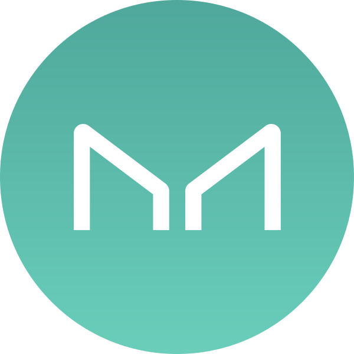
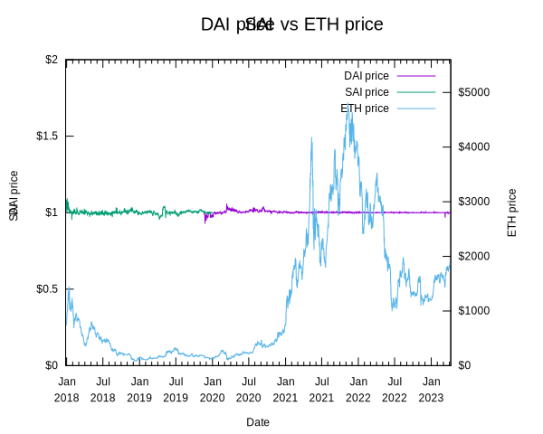

# CS 4501 ### Cryptocurrency <p class='titlep'> </p> <div class="titlesmall"><p> <a href="http://www.cs.virginia.edu/~asb">Aaron Bloomfield</a> (aaron@virginia.edu)<br> <a href="http://github.com/aaronbloomfield/ccc">@github</a> | <a href="index.html">↑</a> | <a href="./03-numbers.html?print-pdf"><img class="print" width="20" src="../slides/images/print-icon.png" style="top:0px;vertical-align:middle"></a> </p></div> <p class='titlep'> </p> ## Stablecoins & Oracles
# Contents [Introduction](#/intro) [Collateralized centralized](#/collcent) [Uncollateralized centralized](#/uncollcent) [Collateralized algorithmic](#/collalg) [Uncollateralized algorithmic](#/uncollalg) [Oracles](#/oracles) [Case study: LUNA/UST](#/casestudy)
# Introduction
## Stablecoins - A coin whose value is meant to not be volatile - Usually tagged in value to a fiat currency - We'll use the US Dollar - *Collateralized* stablecoins means that there is some collateral (financial investment) backing up the value of the stablecoin ## Definitions > Peg: to have the price of one asset (say, a cryptocurrency) exactly match the price of another asset (say, USD) > Depeg: when the asset (say, a cryptocurrency) looses its pegged price against the other asset (say, USD) ## Types <table> <thead> <tr> <th style="border-bottom:0"></th> <th>Centralized</th> <th>Decentralized</th> </tr> </thead> <tbody><tr> <th style="border-bottom:0;border-right:1px solid">Collateralized</th> <td>custodial stablecoins</td> <td>Synthetics</td> </tr> <tr> <th style="border-right:1px solid">Un(der)-collateralized</td> <td>central bank digital currency</td> <td>undercollateralized stablecoins, seigniorage shares</td> </tr> </tbody> </table> - Algorithmic? ## Examples - Examples we'll see here: - <img src="images/logos/usdc-coin-symbol.svg" class="cclogo"> USD Coin ([USDC](https://coinmarketcap.com/currencies/usd-coin/)) <br clear='all'> - <img src="images/logos/usdt-coin-symbol.svg" class="cclogo"> Tether ([USDT](https://coinmarketcap.com/currencies/tether/)) <br clear='all'> - <img src="images/logos/dai-coin-symbol.svg" class="cclogo"> DAI ([DAI](https://coinmarketcap.com/currencies/multi-collateral-dai/)) <br clear='all'> - We've seen DAI before: it's a token cryptocurrency ## Review: Types of currencies - Commodity currency: made from actual valuable commodities, such as gold - Representative currency: one that is backed up by a valuable "thing", such as gold - Fiat currency: established by the government "by fiat" - What the US dollar is (now) - Cryptocurrency (obviously) ## Stablecoin categories - Fiat-collateralized - Rely on a centralized institution with reserves - Examples: Tether, USD Coin, TrueUSD - Crypto-collateralized - Use cryptocurrency assets as collateral - Examples: Dai (DAI) & Maker (MKR); Havven (HAV) & nUSD, Bitshares (BTS) BitUSD - Algorithmic non-collateralized - Use software-based economic models to maintain stability - Examples: Basis, Kowala, Carbon, Fragments - Hybrid stablecoins - A blend of the above approaches - Examples: Reserve, Saga, Aurora - Boreal
# Collateralized centralized <img src="images/logos/usdc-coin-symbol.svg" class="cclogosubtitle"> <img src="images/logos/usdt-coin-symbol.svg" class="cclogosubtitle">
## Collateralized centralized - Defining characteristics: 1. A single entity manages the coin - The entity could be a bank, company, non-profit, consortium, etc. 2. When coins are purchased, the fiat money used for the purchase goes somewhere it can be retrieved - Investments, equities, bank account, safe, etc. <h2><img src="images/logos/usdc-coin-symbol.svg" class="cclogoheader"> USD Coin (<a href="https://coinmarketcap.com/currencies/usd-coin/">USDC</a>) <br clear='all'></h2> - Managed by a consortium named Centre, which is founded by Coinbase (and others) - Backed by actual monetary investments in various accounts - An accounting agency (Grant Thornton) attests monthly to these deposits - If you buy one, the money you pay goes into these accounts - But how risky are those deposits? - If their value goes down, the number of USDC does not change! - Not backed by the US government in any way! <h2><img src="images/logos/usdt-coin-symbol.svg" class="cclogoheader"> Tether (<a href="https://coinmarketcap.com/currencies/tether/">USDT</a>) <br clear='all'></h2> - Similar to USDC in how it works - Run by Tether Ltd - As per [coinmarketcap.com](https://coinmarketcap.com/), it's has the 3rd largest market capitalization (`$`83 billion as of 5/1/22) - After Bitcoin (`$`734 billion) and Ethereum (`$`340 billion) - USD Coin is 5th at `$`49 billion - Scandal-ridden - 2019: NY AG accuses Tether of hiding a `$`850 million loss - It's really unclear where their reserves are held - Many accusations that their reserves are much less than the 1:1 ratio they claim - Not backed by the US government in any way! ## Tether Scandals ## Disadvantages - Risky investments
# Uncollateralized centralized <img src="images/logos/xpd-coin-symbol.svg" class="cclogosubtitle">
## Uncollateralized centralized - Because it is *centralized*, it is managed by a single entity - Because it is *uncollateralized*, it is basically the cryptocurrency equivalent of a fiat currency - Only a government could issue a fiat cryptocurrency and have anybody consider it to have value - Thus, these would be a national central bank issued cryptocurrency ## Examples - In the US: none - <img src="images/flags/uae.svg" class="flag"> UAE: Dubai issues Emcash (launched in 2017) <br clear='all'> - <img src="images/flags/venezuela.svg" class="flag"> Venezuela: Petro (launched in Feb 2018) <br clear='all'> - <img src="images/logos/xpd-coin-symbol.svg" class="cclogo"> Petro ([XPD](https://coinmarketcap.com/currencies/petrodollar/)) is the only one here [listed on coinmarketcap.com](https://coinmarketcap.com/currencies/petrodollar/) <br clear='all'> - <img src="images/flags/estonia.svg" class="flag"> Estonia: Estcoin (planned in 2018, not launched) <br clear='all'> - <img src="images/flags/russia.svg" class="flag"> Russia: Cryptoruble (still in development) <br clear='all'> - Sweden: E-Krona (still in development, launch in 2022?) <br clear='all'> - <img src="images/flags/japan.svg" class="flag"> Japan: J-Coin (not actually a cryptocurrency, more like a bank account / credit card combination) <br clear='all'> ## Drawbacks - The government can track this - Many people who get into cryptocurrency do not want government centralization - It's unclear how this would be better than, say, a credit card or a debit card
# Collateralized Algorithmic <img src="images/logos/dai-coin-symbol.svg" class="cclogosubtitle"> <img src="images/logos/sai-coin-symbol.svg" class="cclogosubtitle"> 
<h2><img src="images/logos/dai-coin-symbol.svg" class="cclogoheader"> Dai (<a href="https://coinmarketcap.com/currencies/multi-collateral-dai/">DAI</a>) <br clear='all'></h2> - Originally only backed by ETH, created in 2017 - An Ethereum smart contract - This coin was <img src="../slides/images/logos/sai-coin-symbol.svg" class="cclogo"> SAI (or Single-Collateral DAI) - In 2019, <img src="../slides/images/logos/dai-coin-symbol.svg" class="cclogo"> DAI was created, and is pegged at `$`1 USD - An ERC-20 token cryptocurrency we've [talked about before](tokens.html#/dai) - All SAI was upgraded to DAI; SAI no longer exists - DAI is backed by multiple types of collateral - Maker ([MKR](https://coinmarketcap.com/currencies/maker/)) is the governance token - [MakerDAO white paper](https://makerdao.com/en/whitepaper/) - The MakerDAO votes to allow additional types of ERC-20 collateral (and their risk factor) - Source code for [SAI](https://github.com/makerdao/sai) and [DAI](https://github.com/makerdao/dss) ## How to buy DAI - Create a 'vault' in a smart contract that contains the asset you want to convert to DAI - This vault is the collateral; one asset per vault - Via the MakerDAO contract, one 'locks' the vault and receives DAI in return - Anybody with a vault can do this; you don't need MKR - Only the MakerDAO can lock and unlock the vault - This DAI is the 'debt' -- hence *Collateralized Debt Position (CDP)* - To redeem (some or all of) the original assets: - Pay back the DAI generated above - Pay a 'stability fee' (aka interest) on the DAI generated - Withdraw the asset(s) from the vault ## Current DAI stats - See them at https://daistats.com/ - On the 'Collateral' tab the stability fees are listed - It varies by asset, typically 2%-6%, but can be higher or lower - ETH-? provides different levels of risk and reward; see [here](https://forum.defisaver.com/t/converting-between-eth-a-eth-b-and-eth-c-maker-vault-types-using-the-loan-shifter/39) for details - The "Collat. Ratio" is how much DAI has been minted versus the collateral - Above 100% means more collateral is locked than DAI is issued ## Target Rate Feedback Mechanism (TRFM) - The target price (aka peg) for DAI is `$`1 USD - If DAI's price falls below the peg, then there is too much supply (or too little demand) - Stabilization goal: reduce supply and increase demand - The smart contract automatically increases the target rate(s) - DAI is now more expensive to mint - This decreases supply (fewer DAI for the same collateral) - This increases price (DAI are worth more collateral) - If DAI's price rises above the peg, then there is too little supply (too much demand) - The smart contract decreases the target rate(s) - The reverse of the above happens ## DAI Liquidation - [Liquidation](https://makerdao.com/en/whitepaper/#liquidation-of-risky-maker-vaults) is discussed in the [DAI whitepaper](https://makerdao.com/en/whitepaper) - Each asset type has a liquidation ratio - Determined and adjusted by MakerDAO votes) - If the collateral-to-debt ratio - [Here](https://itovault.com/how-dai-liquidation-work-makerdaos-mcd-system/) is how it works ([direct image link](https://itovault.com/wp-content/uploads/2020/12/MakerDAO-Liquidation-1024x916.png)) - See recently [liquidated assets](https://makerburn.com/#/liquidations) - MKR is minted to make up the shortfall - This dilutes the MKR price - But since it's worth so much, there is typically no shortfall - And it' doesn't happen often - Read more about liquidations [here](https://itovault.com/how-dai-liquidation-work-makerdaos-mcd-system/) ## What keeps DAI's peg stable? - Stability fees: these fees build additional collateral in the smart contract - Liquidation if a vault's assets are too low - And minting MKR to make up for any difference in bankrupt vaults - Target Rate Feedback Mechanism ## SAI / DAI stability - How well does it work? - Coefficient of Variation (CV) is the standard deviation divided by the mean - It describes the variability of a sample relative to the average - Usually expressed as a percentage - For <img src="images/logos/sai-coin-symbol.svg" class="cclogo"> SAI, it's 1.33% <br clear='all'> - For <img src="images/logos/dai-coin-symbol.svg" class="cclogo"> DAI, it's 0.92% <br clear='all'> - For <img src="images/logos/eth-coin-symbol.svg" class="cclogo"> ETH, it's 147.9% <br clear='all'> - We can also see it as a graph... - I included SAI data until the end of 2019; DAI was introduced Nov 19, 2019; it's price has fluctuated quite a lot since then 
# Uncollateralized algorithmic <img src="images/logos/fei-coin-symbol.svg" class="cclogosubtitle"> <img src="images/logos/tribe-coin-symbol.svg" class="cclogosubtitle">
## Alias - As per [Stanford's CS 251 slide set](https://cs251.stanford.edu/lectures/lecture9.pdf), the two categories are: - Undercollateralized stablecoins: FRAX, FEI, IRON, OHM, Gyroscope - backing: diversified portfolio, seigniorage shares as backstop; peg mechanism: redemption; risks: market risks, oracle dependency - <img src="../slides/images/logos/fei-coin-symbol.svg" class="cclogo"> of those, [FEI](https://coinmarketcap.com/currencies/fei-usd/) has the highest market capitalization (#100 as of 5-23-22) <br clear='all'> - <img src="../slides/images/logos/tribe-coin-symbol.svg" class="cclogo"> it's governance token is [TRIBE](https://coinmarketcap.com/currencies/tribe/) <br clear='all'> - Seigniorage shares: Basis, Maker (backstop), Undercollateralized stablecoins (backstop) - backing: confidence; peg mechanism: supply expansion and contraction; risks: death spiral, oracle dependency
# Oracles
## Oracles - A smart contract can only use the data on the blockchain - Complex situations require more data than that: - Current exchange rates - Random numbers - The ability to interact with other blockchains - The solution: Oracles > Oracle (n): a person who delivers authoritative, wise, or highly regarded and influential pronouncements ## Oracles We can easily create an oracle: ``` contract Oracle { address oracle; uint public price; constructor() { oracle = msg.sender; } function updatePrice (uint update) external { require (msg.sender == oracle, "Only the Oracle can update this"); price = update; } } ``` - Getting people to trust it is another matter ## Oracle: trusted signer  - The oracle signer (aka deployer) updates the price, and anybody can read it - This works well when the source is centralized - Such as the oracles on Ethereum that interact with the Polkadot or Polygon chains - But a corrupt signer can maliciously manipulate the price <!-- .slide: class="right-float-img" --> ## Oracle: $m$ of $n$ signers  - So we have multiple signers - We expect some variance in the values - Different exchanges will provide slightly different exchange rates - We have to take the *median* value, not the *mean* - We'll see why next <!-- .slide: class="right-float-img" --> ## Oracle: $m$ of $n$ signers  - What if some nodes are corrupted? - We have to take the *median* value, not the *mean* - Here the mean is `$`71 - The median is `$`101 - If more than half are trustworthy, then the oracle will have a correct price - Less than half can be traitors! <!-- .slide: class="right-float-img" --> ## Oracle: Schelling oracles  - Each signer puts a *stake* in their vote - We accept the value that has the most stake - Traitors have their stake *slahsed* - Although we allow for some variance in the price - But if we allow for too much variance, a traitor can just give a valid, but low, price <!-- .slide: class="right-float-img" --> ## Schelling oracles & whales  - A *whale* could put in a huge stake to manipulate the price - Knowing full well s/he will lose their stake - Presumably so s/he can make a (bigger) profit off of the price difference
# Case study: LUNAC/USTC <img src="images/logos/luna-coin-symbol.svg" class="cclogosubtitle"> <img src="images/logos/ust-coin-symbol.svg" class="cclogosubtitle">
## Terra, LUNAC, and USTC - Terra is the ecosystem, built upon the Cosmos SDK - Company is called Terraform Labs - Allows developers to build custom blockchains for decentralized apps - <img src="images/logos/luna-coin-symbol.svg" class="cclogo"> LUNA Classic ([LUNAC](https://coinmarketcap.com/currencies/terra-luna/)) is the (volatile) cryptocurrency <br clear='all'> - Previously just LUNA; had a high of `$`118.74 on April 5, 2022 - Terra versus LUNAC is like the difference between Ethereum and ETH - <img src="images/logos/ust-coin-symbol.svg" class="cclogo"> USD Terra Classic ([USTC](https://coinmarketcap.com/currencies/terrausd/)) (previously just UST) was the stablecoin pegged at `$`1 USD <br clear='all'> - The LUNAC cryptocurrency was used to keep the USTC stablecoin on its peg <!-- .slide: class="right-float-img" --> ## Do Kwon <img src='https://miro.medium.com/max/3150/2*OV9xggK69sh-NyLubhRc1Q.jpeg'> - Kwon Do-hyung, known as Do Kwon, is the founder of Terraform Labs (along with Daniel Shin) - Stanford graduate, Korean national - Founded Terraform Labs in Singapore - Was on CoinDesk's [2021 Most Influential list](https://www.coindesk.com/policy/2021/12/10/most-influential-2021-do-kwon/) - Now widely reviled, and various legal actions are pending against him ## LUNA / UST debacle - [Article on LUNA / UST background](https://www.coindesk.com/learn/what-is-luna-and-ust-a-guide-to-the-terra-ecosystem/) - [Overview of the crash](https://www.cnet.com/personal-finance/crypto/terras-luna-crypto-crash-how-ust-broke-and-whats-next/) - [Do Kwon reportedly cashed out $2.7 billion in the span of a few months prior to the LUNA/UST collapse](https://watcher.guru/news/how-do-kwon-allegedly-cashed-out-2-7b-from-terra-network?c=70) (and [twitter announcement](https://twitter.com/watcherguru/status/1535707516784476163?s=21&t=cZ9G69kuatTgBDdnliEieQ)); [this reddit thread](https://www.reddit.com/r/CryptoCurrency/comments/v9ypa6/heres_how_do_kwon_cashed_out_27_billion_using/) describes the article also ## Background - Anchor: https://theanchor.io/ - Degenbox by [Abracadabra](https://abracadabra.money/): ... - Abracadabra, MIM, and SPELL - [MIM](https://coinmarketcap.com/currencies/magic-internet-money/) - [this article](https://blocmates.com/blogmates/a-complete-guide-to-abracadabra-money-spell-mim-and-sspell/) ## So what happened? - See [FatMatTerra's twitter thread](https://twitter.com/FatManTerra/status/1535623662153437185) - And a [watcher.guru article](https://watcher.guru/news/how-do-kwon-allegedly-cashed-out-2-7b-from-terra-network) that helps explain it (but not all that well)